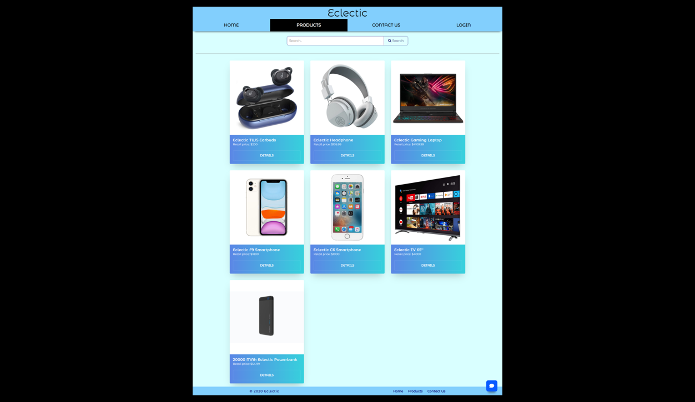
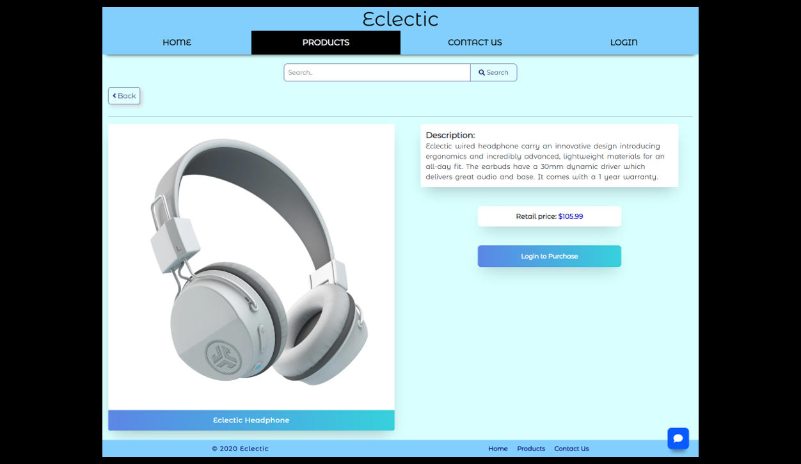
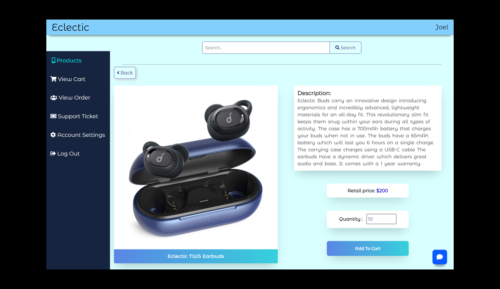
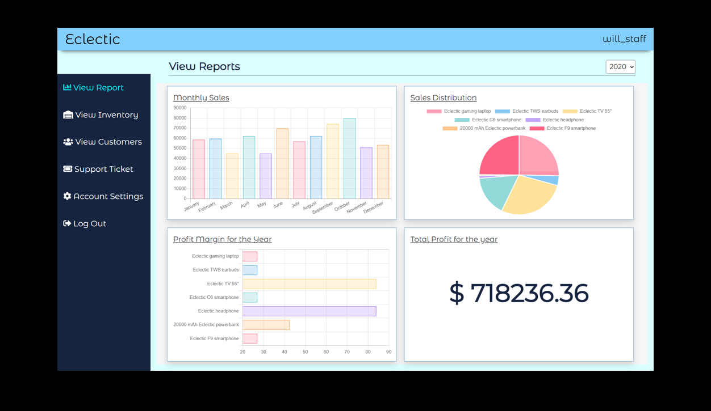
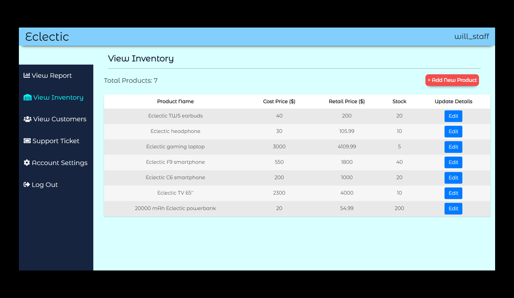
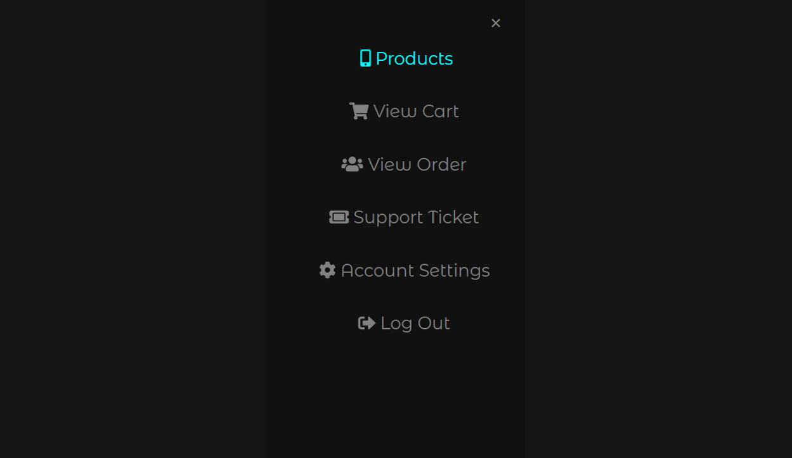
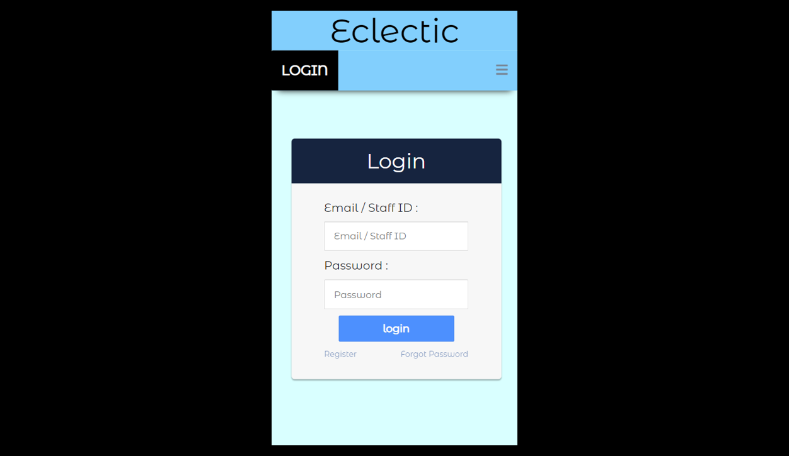
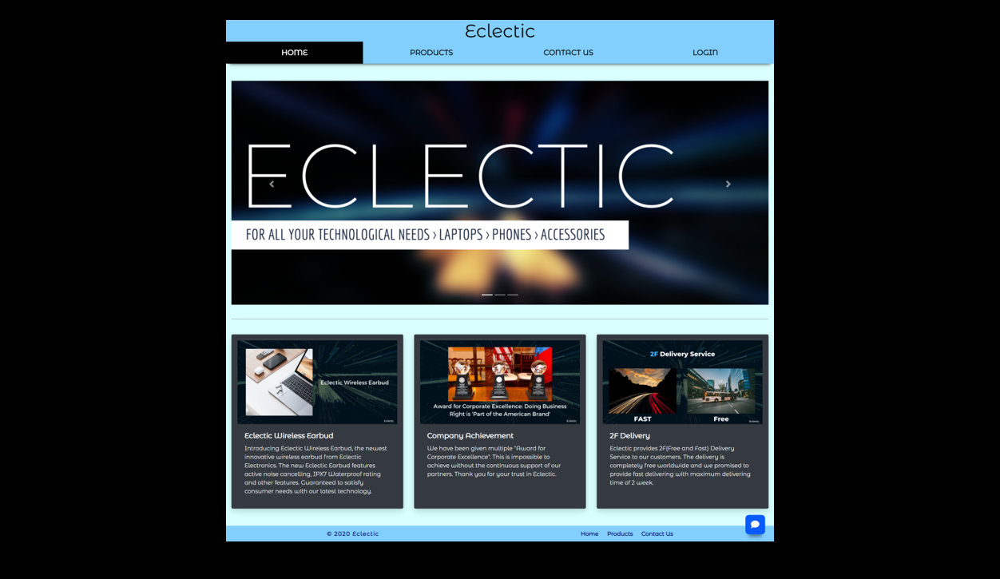

Eclectic (Website)






Project information
- Category: E-commerce Web Application
- Purpose: School Project
- Project Date: 10/2019 - 02/2020
- Result: Distinction for the Module
To be eligible for module distinction, you must have passed the module with a Grade A in your first attempt. The number of distinctions awarded for each module is capped at not more than the top 5% of the number of students taking the module. - Description:
Eclectic Web is an E-Commerce website that serves as a platform for the customer to purchase electronic products and staff to view sales and manage the business.
Project Details
Background Information :
Eclectic was a project completed as part of my Nanyang Polytechnic Year 1 Semester 2 Application Development Project Module.
The project's main objective is to apply the concepts of object-oriented programming to develop a Flask Web Application that is maintainable and extensible.
After forming a team of 4, we were task to implement an E-Commerce Web Application. It should support both customers to make online transaction requests from the different interface
such as desktop PC, Kiosk and mobile devices, and staff to do backend processing of transactions and generate information for analysis to make critical decisions for the company.
I was assigned as a normal team member. Besides carrying out allocated tasks, I volunteered to take the initiative to design
the user interface and user experience of the web to ensure the website is easy to use, desirable and the contents are findable.
My main task in this project includes:
- Ensure all user-related web pages are Responsive.
Responsive Web Design (RWD) is a web development approach. A website's appearance dynamically changes depending on the screen size to overcome the problem of designing for the multitude of devices available to customers. I improved the existing non-responsive website to a responsive website using media queries to our layout. - Home Page serves as the landing page for both new and returning visitors.
- Product Page for the customer to view all the products with a search bar to search for the product the customer is looking for.
- Product Details Page for the customer to view more information about a specific product
- Report Page for staff to have a quick understanding of the business's recent sales to help make critical decisions for the company.
I have decided to create visualizations regarding monthly sales, sales distribution by the products, the profit margin for the accounting year, and total profit for the year to help the staff better understand the recent sales. - Inventory Management Page for staff to view the inventory, add new inventory, and modify existing inventory (add new stock, modify product description).
Image below shows the Login Page of Eclectic Website on Iphone 8

Image below shows the Home Page of Eclectic Website

Image below shows the Product Page of Eclectic Website
Image below shows the Product Details Page of Eclectic Headphone
Image below shows the View Report Page of Eclectic Website after user is authenticated as staff
Image below shows the View Iventory Page of Eclectic Website after user is authenticated as staff
Challanges
As this is the first group project I have done, there are many challenges faced unsurprisingly. Here are some of the challenges we faced :
- Challange
Group work. Working in a group was never easy, especially since it is the first time of having a group project module in my poly life. As expected, conflicts happened due to mainly conflict in ideas and lack of appropriate skills to achieve our goal.
Solution
I decided to stand out and try to combine their idea and provide them with a detailed wireframe. I know the wireframe was not perfect. Thus I sought feedback from my team members and modified it accordingly to their feedback or concern. When the prototype is finalized, our group leader later allocated the tasks based on each personal preference smoothly Here is the Wireframe (PDF) - Challange
Technical Difficulties were also not avoidable as we were beginners in application development.
Solution
Luckily, with the help of Google and each other's help in the group, We resolved all the difficulties and met our expectations. - Challange
Time Constraints. While having other modules assignments, tests, and solving technical difficulties occurred in project development, it had cost us a lot of time to complete this assignment; however limited time was given to complete the project.
Solution
By having a detailed plan and progress check regularly, we could keep track of our progress and ensure we complete the project on time.
Conclusion
Overall, this project has been an extremely educational experience not only in terms of coding but also in how to work as a group.
The most important learning point here is time management. In the development process of an application,
it is important to note how much time and effort each task is needed to plan our time spend and make necessary changes to achieve our goal within the time given.
Lastly, we have done a great job as a group as everyone was cooperative and tasks were all completed on time so that we could integrate the project smoothly else I would not be able to get the distinction grade.
Developed with:
- HTML
- CSS
- JS
- Python-Flask
- Shelve